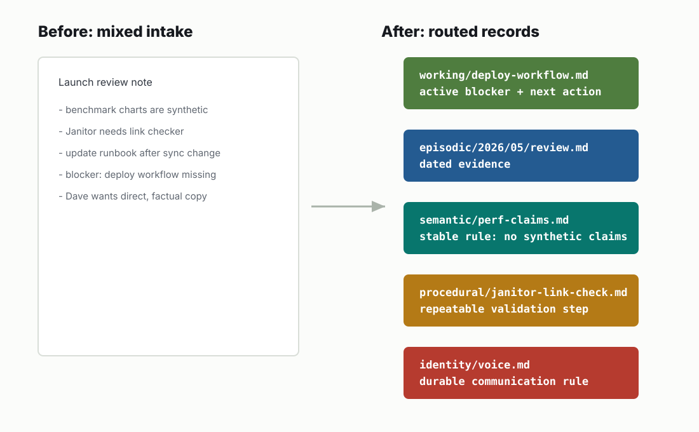

Layer 6
Working: Current state
What is active right now and likely to change soon?
| Canonical path | working/ |
|---|---|
| Trigger | Active tasks, hypotheses, temporary notes, scratch state, open loops. |
| Stores | Current operating context with owners, blockers, next actions, and expiry. |
| Avoid | Permanent facts, evidence logs, and long-term decisions. |
| Lifecycle | Mutate aggressively; consolidate or delete when no longer current. |
Current operating state
Working memory is intentionally temporary. It carries what is active now: hypotheses, blockers, task state, and intake items waiting to be decomposed.
| No subdirs smell test | If working/ needs a deep folder tree, the material is probably no longer temporary. Route it to the durable layer. |
|---|---|
| Expiry | Every working note should have an owner, next action, and review date. |
| Exit paths | Resolve, delete, or consolidate into semantic, episodic, procedural, reference, identity, or decisions. |

Intake decomposition